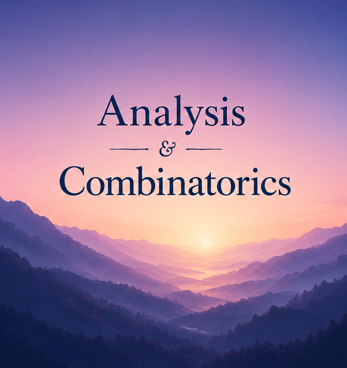

Dorsa Ghoreishi
Assistant Professor, Department of Mathematics and Statistics, Saint Louis University
Personal WebsiteAugust 10-15, 2026 · Saint Louis University
SpinM is organized around short lectures, guided problem sessions, mathematical discussion, and student interaction. The goal is to make advanced ideas accessible through examples, visual models, and collaborative work.
Topics may include graph theory, discrete harmonic analysis, diffusion on networks, fractal geometry, and mathematical models for prediction on discrete structures.

Daily rhythm
| Time | Activity |
|---|---|
| 9:00 - 10:30 am | Lecture 1 |
| 10:30 - 11:00 am | Coffee break and discussion |
| 11:00 am - 12:30 pm | Problem session |
| 12:30 - 2:00 pm | Lunch break |
| 2:00 - 3:30 pm | Lecture 2 |
| 3:30 - 4:00 pm | Coffee break and discussion |
| 4:00 - 5:30 pm | Problem session |
| Time | Activity |
|---|---|
| 9:00 - 10:30 am | Lecture 1 |
| 10:30 - 11:00 am | Coffee break and discussion |
| 11:00 am - 12:30 pm | Lecture 2 |
| Afternoon | Free time for informal study and networking |
| Time | Activity |
|---|---|
| Morning | Contributed talks |
| Afternoon | Community-building activity |
Team
Assistant Professor, Department of Mathematics and Statistics, Saint Louis University
Personal WebsiteAssociate Professor, Department of Mathematics and Statistics, Saint Louis University
Personal WebsiteAssistant Professor, Department of Mathematics and Statistics, Saint Louis University
Personal WebsiteGraduate Student, Department of Mathematics, Washington University in St Louis
Personal WebsiteGraduate Student, Department of Mathematics, Vanderbilt University
Personal Website